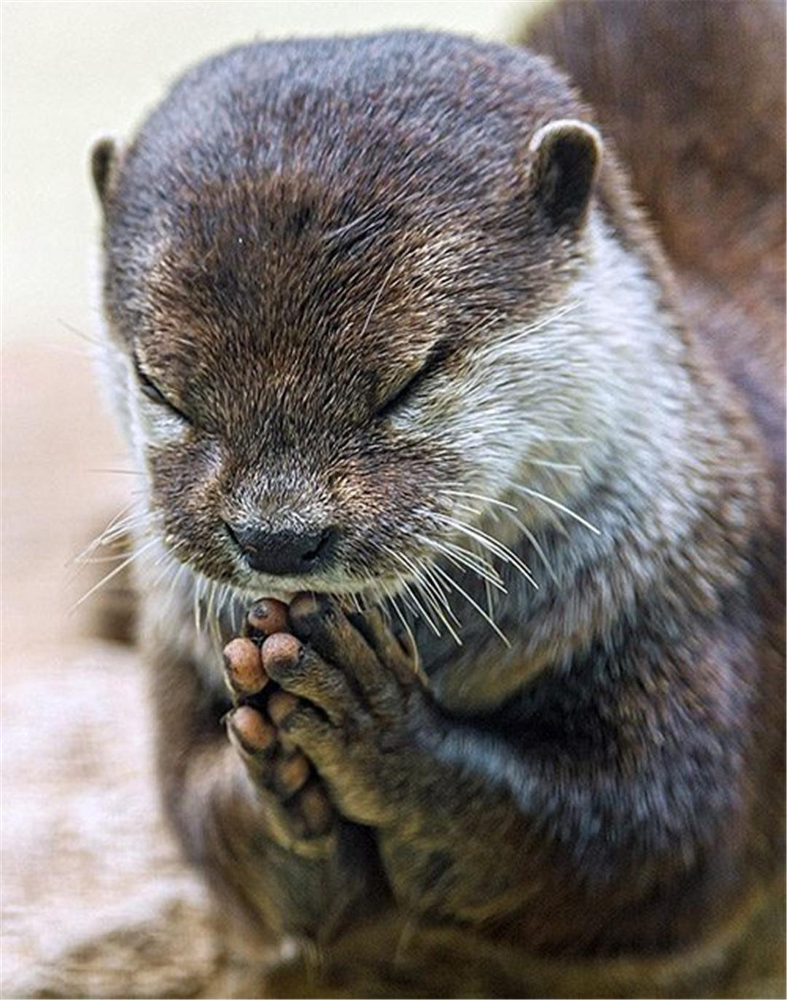
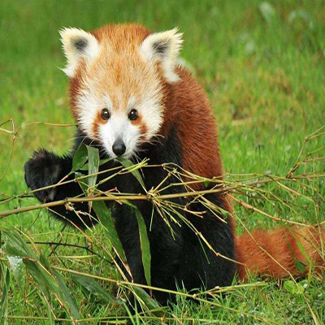
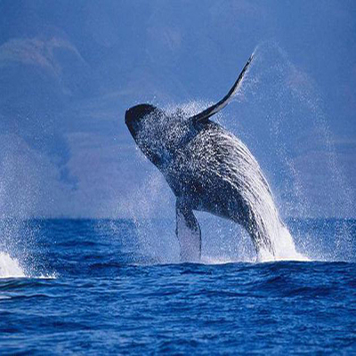
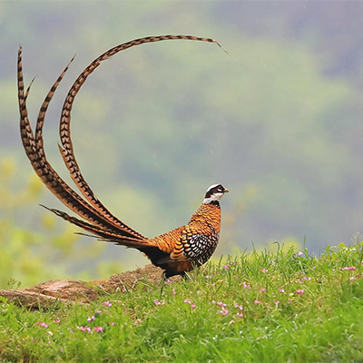
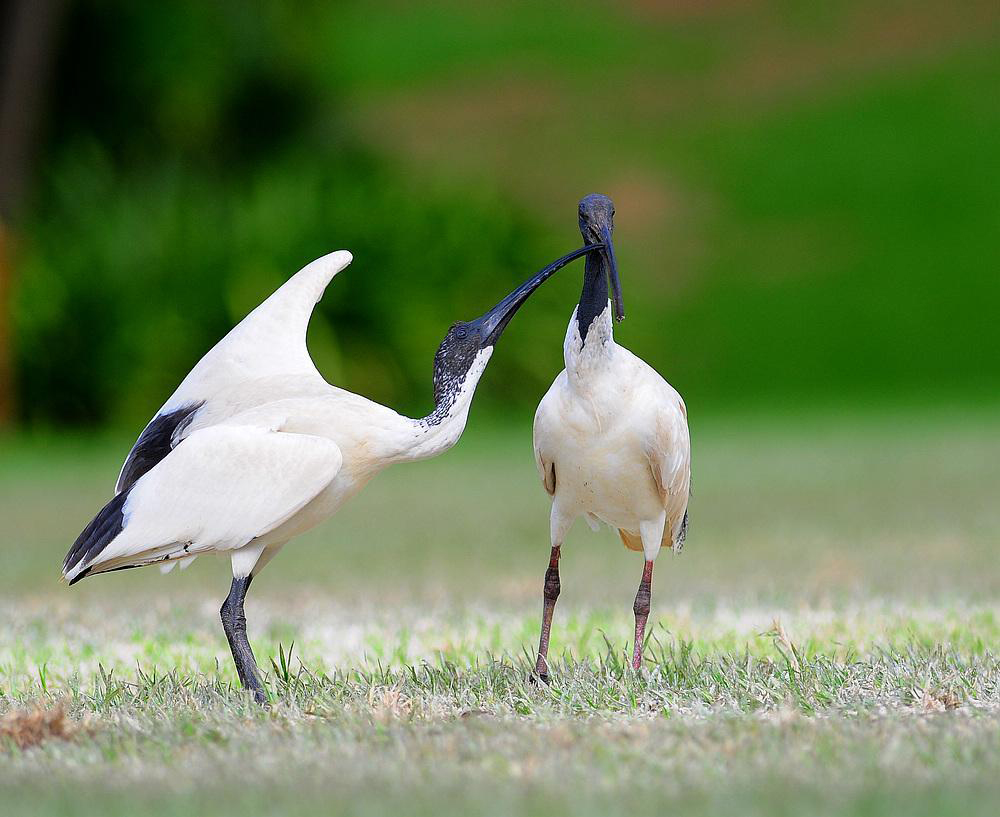

国家二级保护动物
-

江獭
江獭（学名：lutrogale perspicillata），是鼬科、江獭属动物。江獭头大，耳短小而圆，四肢粗短，爪小，体背毛色为浅黑褐色，腹部为暗褐色。
江獭 -

小熊猫
小熊猫，小熊猫科小熊猫属的一种动物。外形像猫，但较猫肥大，全身红褐色。
小熊猫 -

座头鲸
座头鲸，其“座头”之名源于日文“座头”，意为“琵琶”，指鲸背部的形状。为热带暖海性鲸类。
座头鲸 -

白冠长尾雉
白冠长尾雉，属于鸡形目，雉科，是一种森林益鸟，喜在常绿针阔混交林和落叶阔叶乔木林中栖息、隐蔽和觅食，取食鳞翅目的幼虫、虫卵，对抑制森林虫害，维护生态平衡起到重要的作用。
白冠长尾雉 -

鹅喉羚
鹅喉羚（Gazella subgutturosa）属典型的荒漠、半荒漠区域生存的动物，体形似黄羊，因雄羚在发情期喉部肥大，状如鹅喉，故得名“鹅喉羚”。
鹅喉羚 -

白鹮
白鹮（学名：Threskiornis melanocephalus）：体长67-75厘米，通体白色。头部裸露部分至上颈黑色，背腰、尾上及颈的下部有灰色饰羽（冬羽无）。嘴黑，长而下弯，跗跖黑色。
白鹮